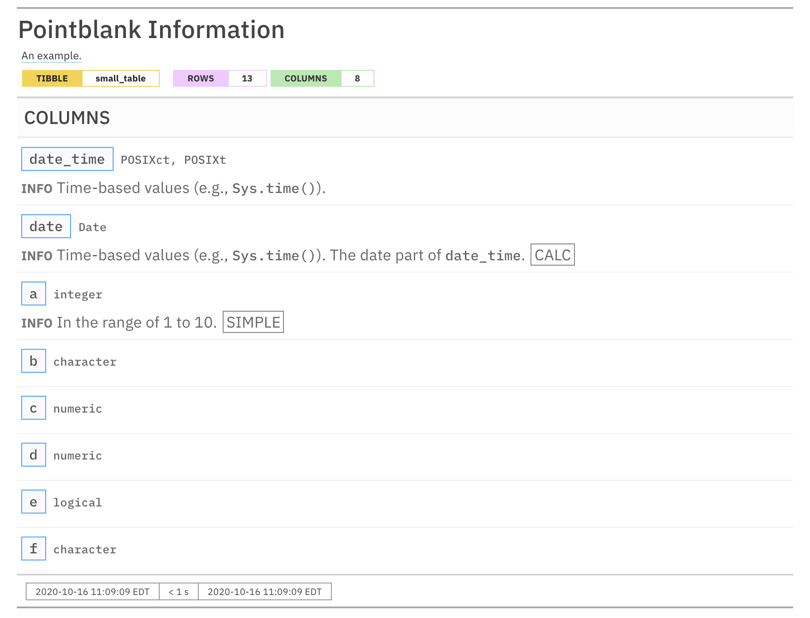

R/info_add.R
info_columns.RdUpon creation of an informant object (with the create_informant()
function), there are two sections containing properties: (1) 'table' and (2)
'columns'. The 'columns' section is initialized with the table's column names
and their types (as _type). Beyond that, it is useful to provide details
about the nature of each column and we can do that with the info_columns()
function. A single column (or multiple columns) is targeted, and then a
series of named arguments (in the form entry_name = "The *info text*.")
serves as additional information for the column or columns.
info_columns(x, columns, ..., .add = TRUE)
| x | An informant object of class |
|---|---|
| columns | The column or set of columns to focus on. Can be defined as a
column name in quotes (e.g., |
| ... | Information entries as a series of named arguments. The names
refer to subsection titles within |
| .add | Should new text be added to existing text? This is |
A ptblank_informant object.
The info text that's used for any of the info_*() functions readily
accepts Markdown formatting, and, there are a few Text Tricks that can be
used to spice up the presentation. Markdown links written as < link url >
or [ link text ]( link url ) will get nicely-styled links. Any dates
expressed in the ISO-8601 standard with parentheses, "(2004-12-01)", will
be styled with a font variation (monospaced) and underlined in purple. Spans
of text can be converted to label-style text by using: (1) double parentheses
around text for a rectangular border as in ((label text)), or (2) triple
parentheses around text for a rounded-rectangular border like (((label text))).
CSS style rules can be applied to spans of info text with the following form:
[[ info text ]]<< CSS style rules >>
As an example of this in practice suppose you'd like to change the color of some text to red and make the font appear somewhat thinner. A variation on the following might be used:
"This is a [[factor]]<<color: red; font-weight: 300;>> value."
The are quite a few CSS style rules that can be used to great effect. Here are a few you might like:
color: <a color value>; (text color)
background-color: <a color value>; (the text's background color)
text-decoration: (overline | line-through | underline);
text-transform: (uppercase | lowercase | capitalize);
letter-spacing: <a +/- length value>;
word-spacing: <a +/- length value>;
font-style: (normal | italic | oblique);
font-weight: (normal | bold | 100-900);
font-variant: (normal | bold | 100-900);
border: <a color value> <a length value> (solid | dashed | dotted);
In the above examples, 'length value' refers to a CSS length which can be
expressed in different units of measure (e.g., 12px, 1em, etc.). Some
lengths can be expressed as positive or negative values (e.g., for
letter-spacing). Color values can be expressed in a few ways, the most
common being in the form of hexadecimal color values or as CSS color names.
A pointblank informant can be written to YAML with yaml_write() and the
resulting YAML can be used to regenerate an informant (with
yaml_read_informant()) or perform the 'incorporate' action using the target
table (via yaml_informant_incorporate()). The way that information on table
columns is represented in YAML works like this: info text goes into
subsections of YAML keys named for the columns, which are themselves part of
the top-level columns key. Here is an example of how several calls of
info_columns() are expressed in R code and how the result corresponds to
the YAML representation.
# R statement
informant %>%
info_columns(
columns = "date_time",
info = "*info text* 1."
) %>%
info_columns(
columns = "date",
info = "*info text* 2."
) %>%
info_columns(
columns = "item_count",
info = "*info text* 3. Statistics: {snippet_1}."
) %>%
info_columns(
columns = vars(date, date_time),
info = "UTC time."
)
# YAML representation
columns:
date_time:
_type: POSIXct, POSIXt
info: '*info text* 1. UTC time.'
date:
_type: Date
info: '*info text* 2. UTC time.'
item_count:
_type: integer
info: '*info text* 3. Statistics: {snippet_1}.'
Subsections represented as column names are automatically generated when
creating an informant. Within these, there can be multiple subsections used
for holding info text on each column. The subsections used across the
different columns needn't be the same either, the only commonality that
should be enforced is the presence of the _type key (automatically updated
at every incorporate() invocation).
It's safest to use single quotation marks around any info text if directly
editing it in a YAML file. Note that Markdown formatting and info snippet
placeholders (shown here as {snippet_1}, see info_snippet() for more
information) are preserved in the YAML. The Markdown to HTML conversion is
done when printing an informant (or invoking get_informant_report() on an
informant) and the processing of snippets (generation and insertion) is
done when using the incorporate() function. Thus, the source text is always
maintained in the YAML representation and is never written in processed form.

3-2
Other Information Functions:
info_columns_from_tbl(),
info_section(),
info_snippet(),
info_tabular(),
snip_highest(),
snip_list(),
snip_lowest(),
snip_stats()
# Create a pointblank `informant` # object with `create_informant()`; # we specify a `read_fn` with the # `~` followed by a statement that # gets the `small_table` dataset informant <- create_informant( read_fn = ~ small_table, tbl_name = "small_table", label = "An example." ) # We can add *info text* to describe # the columns in the table with multiple # `info_columns()` calls; the *info text* # calls are additive to existing content # in subsections informant <- informant %>% info_columns( columns = vars(a), info = "In the range of 1 to 10. (SIMPLE)" ) %>% info_columns( columns = starts_with("date"), info = "Time-based values (e.g., `Sys.time()`)." ) %>% info_columns( columns = "date", info = "The date part of `date_time`. (CALC)" ) # Upon printing the `informant` object, we see # the additions made to the 'Columns' section if (interactive()) { # The `informant` object can be written to # a YAML file with the `yaml_write()` # function; then, information can # be directly edited or modified yaml_write( informant = informant, filename = "informant.yml" ) # The YAML file can then be read back # into an informant object with the # `yaml_read_informant()` function informant <- yaml_read_informant( filename = "informant.yml" ) }